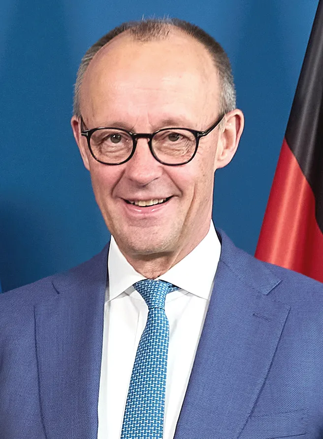

Merz pressiona UE por € 45 bilhões à Ucrânia; premiê eslovaco acusa chanceler de chantagem
Alemanha vincula negociação do orçamento europeu a compromisso coletivo de financiar Kiev; divergências entre membros ameaçam consenso.

O que aconteceu
O chanceler alemão Friedrich Merz defendeu que todos os países da União Europeia contribuam para cobrir a necessidade de financiamento da Ucrânia em 2027. Em carta ao presidente do Conselho Europeu, António Costa, Merz associou um compromisso comum sobre a ajuda a Kiev às negociações de outros temas financeiros, incluindo o orçamento plurianual da UE a partir de 2028. A lacuna estimada nas contas ucranianas para 2027 é de € 70 bilhões, dos quais cerca de € 45 bilhões seriam cobertos pela União Europeia. O primeiro-ministro da Eslováquia, Robert Fico, acusou Merz de 'chantagem' por condicionar discussões orçamentárias ao apoio financeiro à Ucrânia. Eslováquia, Hungria e República Tcheca haviam obtido isenção de participação em um empréstimo anterior de € 90 bilhões e sinalizam resistência a uma nova rodada. As posições foram noticiadas em 10 de novembro de 2026 por Reuters e The Guardian, com detalhes da carta divulgados também pela Euronews em 9 de novembro. Não há acordo final sobre a nova ajuda.
Análise do Corvo
A disputa põe em confronto a tentativa alemã de distribuir os custos do apoio à Ucrânia e a resistência de governos que questionam novas obrigações financeiras. Como maior contribuinte líquido do orçamento europeu, a Alemanha dispõe de influência política, mas não pode tratar a concordância dos demais países como automática. Vincular a ajuda militar e orçamentária a Kiev ao orçamento de 2028–2034 pode aumentar a pressão por um acordo, ao mesmo tempo em que dificulta a aprovação de outras prioridades da UE. A lacuna de € 70 bilhões é uma estimativa de necessidade para 2027, não um desembolso já autorizado.
Contraponto
Merz argumenta que a segurança europeia é indivisível e exige repartição justa de encargos. Fico sustenta que a Eslováquia possui direitos de decisão iguais aos dos demais membros e rejeita a vinculação. Outros governos alertam que a estratégia pode travar tanto a ajuda à Ucrânia quanto o orçamento europeu. A proposta de € 45 bilhões ainda depende de negociações e de uma solução financeira concreta.
Fontes
- Reuters — Merz diz que todos os países da UE devem apoiar Ucrânia (10/11/2026)
- The Guardian — Merz acusado de chantagem por Fico (10/11/2026)
- Euronews — carta de Merz e orçamento europeu (09/11/2026)
O Corvo no seu e-mail
As principais notícias e análises do Raven Crow, direto na sua caixa de entrada. Sem spam.
Você recebe um e-mail para confirmar. Cancelar é um clique em qualquer edição. O cadastro fica no Buttondown, serviço que envia a newsletter.